長期トレンド
JKMとJEPXシステムプライスの推移グラフ
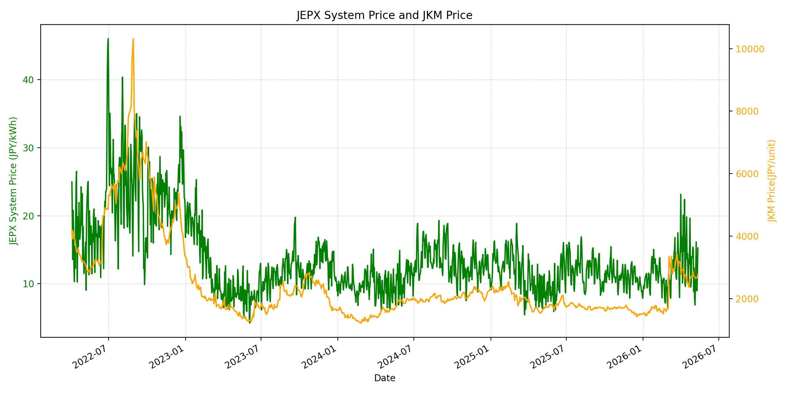
WTIの推移グラフ
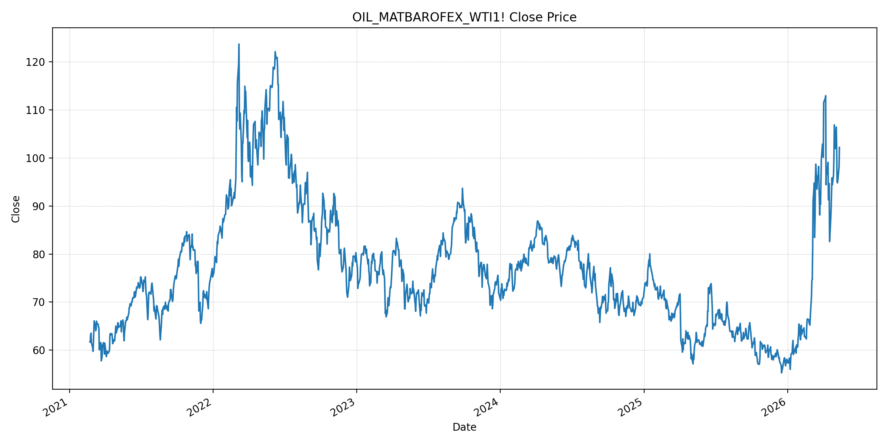
JEPXエリアプライスグラフ（直近一年分）
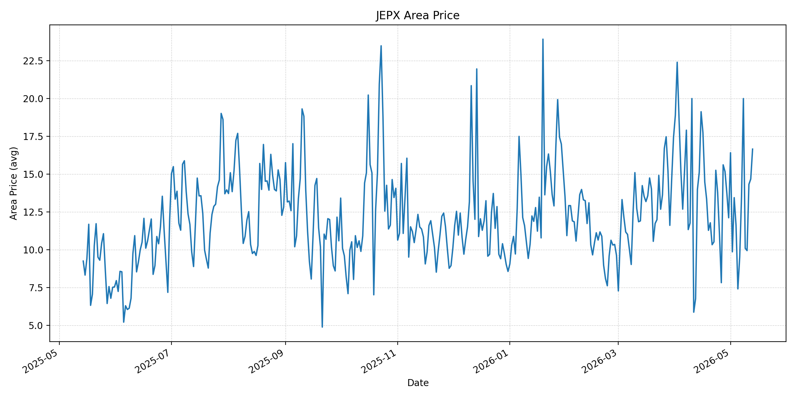
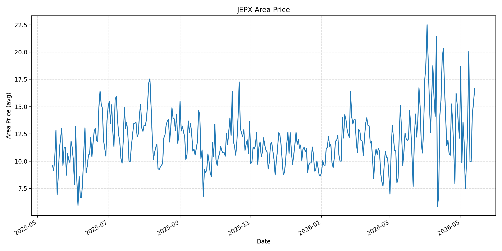
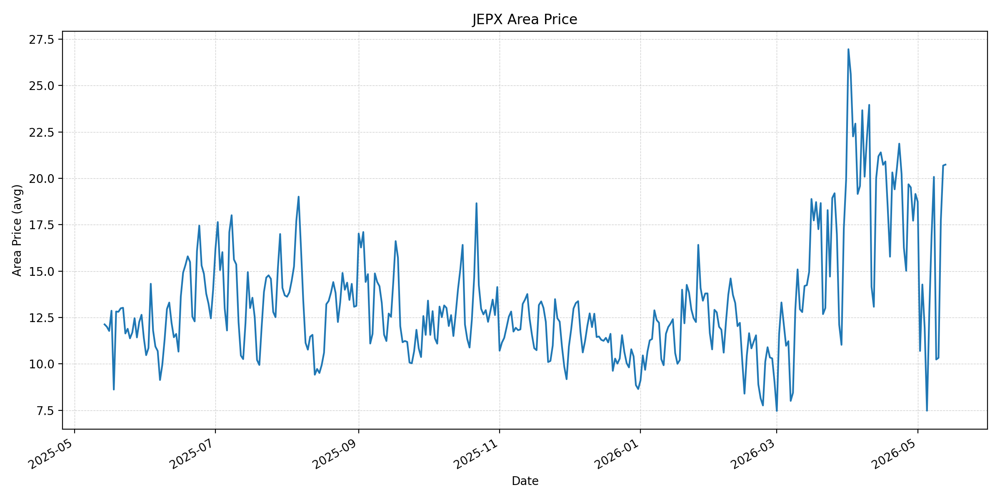
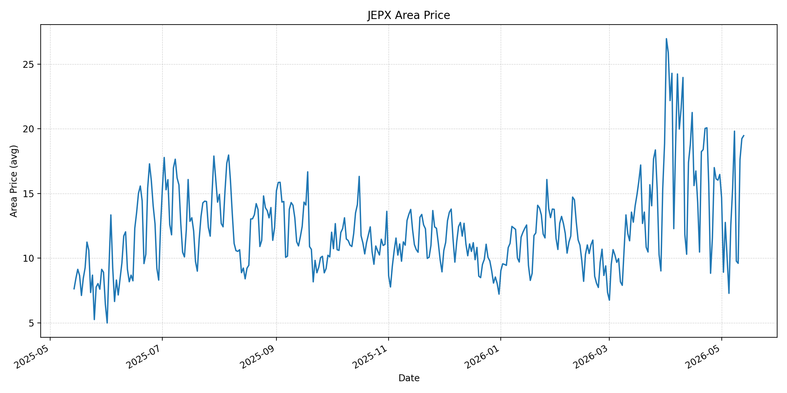
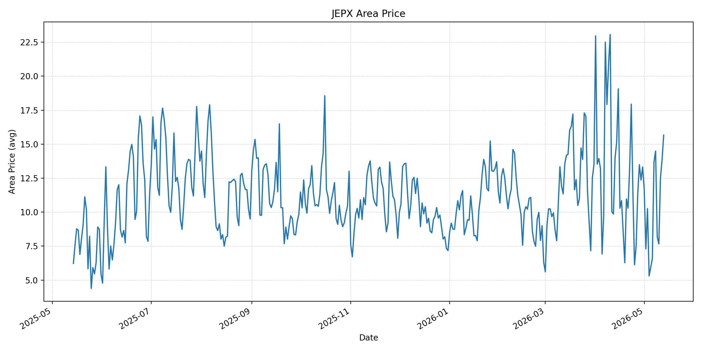
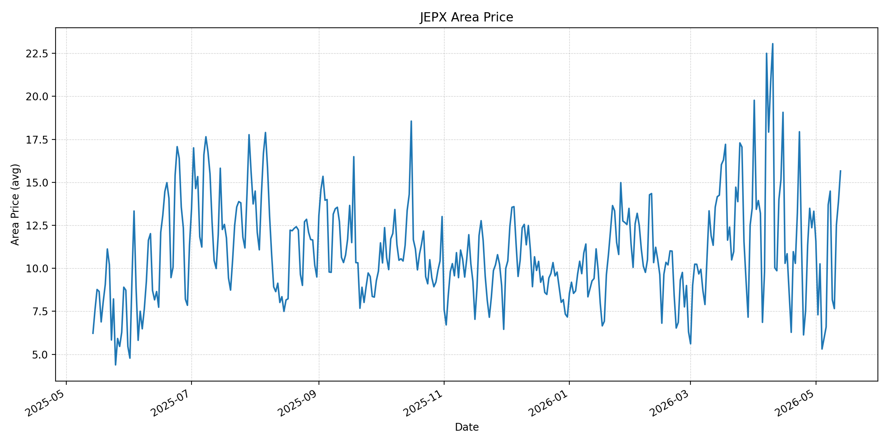
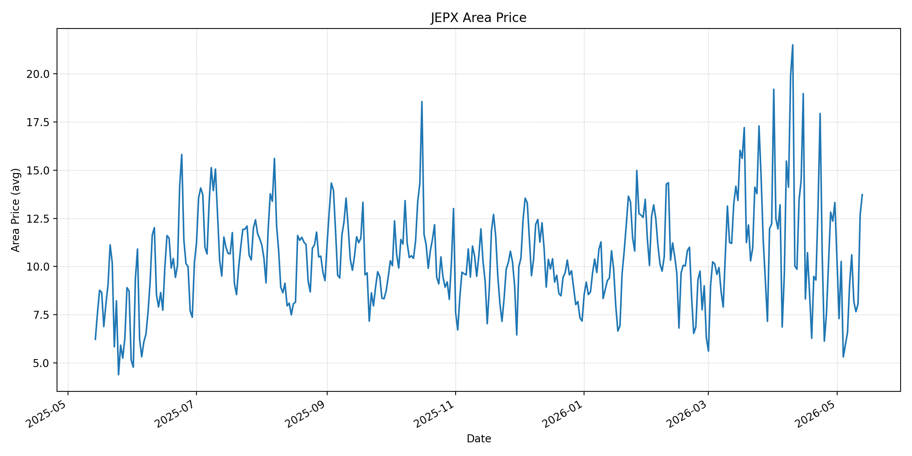
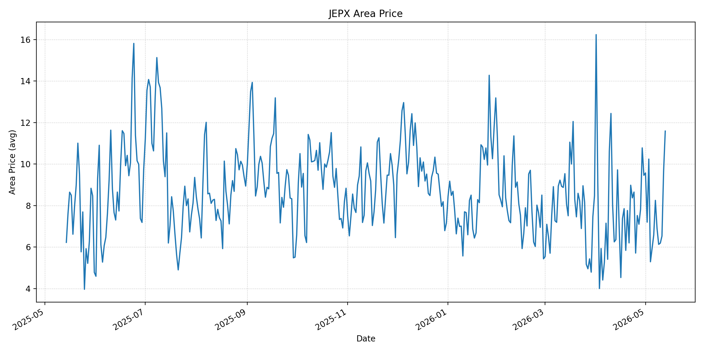
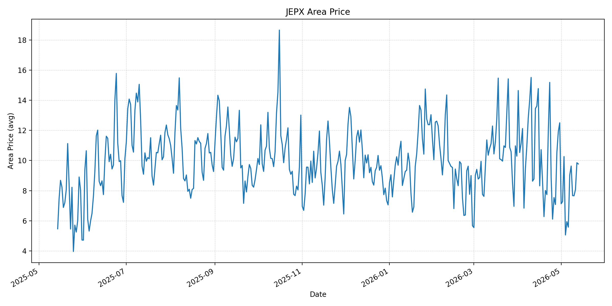
短期トレンド
JKMとJEPXシステムプライスの推移グラフ
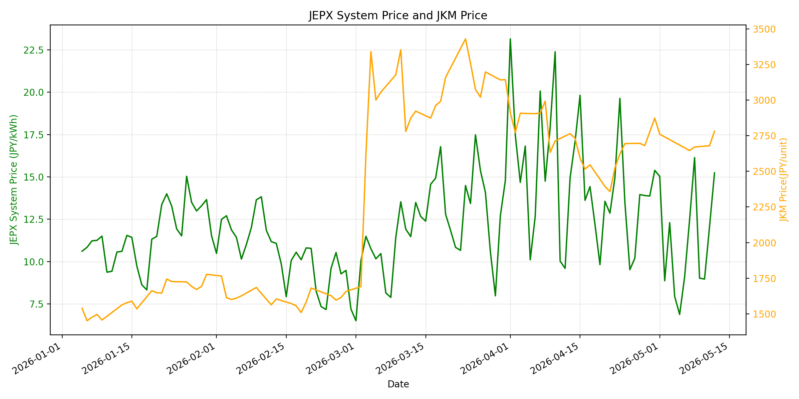
WTIの推移グラフ
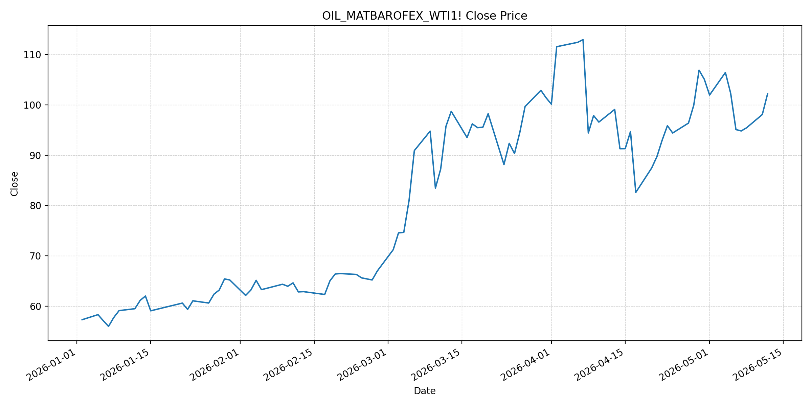
JEPXシステムプライス
JEPXは受渡日ベースの最新非空値で評価しています。最新値は 2026-05-13 分です。先週終値は 2026-05-06 時点の直近値、先月終値は 2026-04-30 時点の直近値で評価しています。
| エリア | 当日価格 | 前日価格 | 前日比（％） | 先週終値 | 先週比（％） | 先月終値 | 先月比（％） | 過去最高値 | 最高値比（％） |
|---|---|---|---|---|---|---|---|---|---|
| システム | 16.19 | 15.24 | 6.23 | 9.1 | 77.91 | 15.39 | 5.2 | 64.06 | -74.73 |
| 北海道 | 16.65 | 14.67 | 13.5 | 9.52 | 74.89 | 12.11 | 37.49 | 73.92 | -77.47 |
| 東北 | 16.68 | 15.25 | 9.38 | 9.97 | 67.3 | 12.11 | 37.74 | 84.92 | -80.36 |
| 東京 | 20.74 | 20.69 | 0.24 | 12.75 | 62.67 | 19.16 | 8.25 | 86.13 | -75.92 |
| 中部 | 19.47 | 19.24 | 1.2 | 12.55 | 55.14 | 16.47 | 18.21 | 52.06 | -62.6 |
| 北陸 | 15.66 | 13.88 | 12.82 | 6.59 | 137.63 | 13.32 | 17.57 | 46.48 | -66.31 |
| 関西 | 15.66 | 13.88 | 12.82 | 6.59 | 137.63 | 13.32 | 17.57 | 46.48 | -66.31 |
| 中国 | 13.73 | 12.67 | 8.37 | 6.58 | 108.66 | 13.32 | 3.08 | 46.48 | -70.46 |
| 四国 | 11.59 | 9.66 | 19.98 | 6.58 | 76.14 | 9.46 | 22.52 | 46.48 | -75.07 |
| 九州 | 9.77 | 9.85 | -0.81 | 5.58 | 75.09 | 12.5 | -21.84 | 40.54 | -75.9 |
LNG先物価格
最新値は 2026-05-12 の LNG(close) です。先週終値は 2026-05-01 時点の直近値、先月終値は 2026-04-30 時点の直近値で評価しています。
| 当日価格 | 前日価格 | 前日比（％） | 先週終値 | 先週比（％） | 先月終値 | 先月比（％） | 過去最高値 | 最高値比（％） |
|---|---|---|---|---|---|---|---|---|
| 2782 | 2680 | 3.81 | 2761 | 0.76 | 2874 | -3.2 | 10319 | -73.04 |
石油先物価格
最新値は 2026-05-12 の OIL(close) です。先週終値は 2026-05-05 時点の直近値、先月終値は 2026-04-30 時点の直近値で評価しています。
| 当日価格 | 前日価格 | 前日比（％） | 先週終値 | 先週比（％） | 先月終値 | 先月比（％） | 過去最高値 | 最高値比（％） |
|---|---|---|---|---|---|---|---|---|
| 102.18 | 98.07 | 4.19 | 102.27 | -0.09 | 105.07 | -2.75 | 123.7 | -17.4 |
ニュース
イラン情勢に関するニュース
- 2026年5月12日、Guardianは、米国の対イラン戦争費用が約 290 億ドルに達し、トランプ米大統領がイランは「制御下」と主張する一方、米情報機関はイランがホルムズ周辺の主要ミサイル拠点をなお多数保持していると見ていると報じました。停戦後も軍事余力と政治的圧力が残っています。 参照: Guardian, 2026-05-12
- 2026年5月13日、Reutersは、米イラン和平期待が後退し、トランプ米大統領が停戦は「生命維持装置上」と述べたと報じました。イランはホルムズ海峡の主権、米海上封鎖解除、戦争被害補償などを求めており、合意条件の隔たりは大きいままです。 参照: ThePrint/Reuters, 2026-05-13
ホルムズ海峡経由の石油・LNGに関するニュース
- 2026年5月13日、Reutersは、ホルムズをめぐる膠着で原油が上昇し、和平期待が後退したと報じました。イランの要求にはホルムズ海峡の主権維持が含まれており、海峡経由の原油・LNG輸送リスクは解消していません。 参照: ThePrint/Reuters, 2026-05-13
- 2026年5月12日、APは、ホルムズ閉鎖で船舶燃料の不足が広がり、シンガポールなどアジアの補油拠点でバンカー燃料価格が急騰していると報じました。LNG燃料船への切り替えも選択肢ですが、補給インフラには制約があり、輸送コストの上昇は続きやすい状況です。 参照: AP, 2026-05-12
ホルムズ海峡経由でない石油・LNGに関するニュース
- 2026年5月12日、Saudi Aramcoのアミン・ナセルCEOは、ホルムズ混乱が続けば石油市場の正常化が2027年までずれ込む可能性があると警告しました。同社は東西パイプラインを最大限活用してホルムズを避ける輸出を増やしていますが、世界供給の不足を完全には吸収できません。 参照: New York Post, 2026-05-12
- 2026年5月12日、FNNは、日本政府がホルムズ海峡を経由しない原油の代替調達について、5月は必要量の約 6 割、6月は 7 割以上の確保にめどを立てたと報じました。非ホルムズ調達は拡大していますが、残りを補うための在庫・備蓄管理はなお重要です。 参照: FNN, 2026-05-13
日本国内のイラン戦争に関係するニュース
- 2026年5月12日、Reutersは、高市首相が中東情勢関係閣僚会議で、6月の原油輸入について前年の 7 割確保にめどがついたと述べたと報じました。4月は前年の 2 割、5月は約 6 割見込みで、代替調達は改善しています。 参照: Newsweek Japan/Reuters, 2026-05-12
- 2026年5月12日、テレビ朝日は、政府が代替ルートによる原油調達の進展を受け、5月の国家備蓄第3弾放出を見送る方針を示したと報じました。電力会社やJEPX制度に直接関わる新規発表は確認できませんでしたが、燃料調達政策は国内電力コストの下支え材料です。 参照: テレビ朝日, 2026-05-12
インサイト
ニュース事項による日本の電力市場への影響（短期：数日〜1週間）
- JEPXシステムプライスは 16.19 円/kWhで前日比 6.23%、先週比 77.91% と上昇しました。東京 20.74、中部 19.47 は高値圏で、燃料価格だけでなく国内需給と地域差がスポット価格を押し上げています。
- LNGは 2782 と前日比 3.81%、OILは 102.18 と前日比 4.19% 上昇しました。ホルムズ膠着と船舶燃料不足の報道は、数日〜1週間の燃料・物流コストを再び押し上げる材料です。
- 一方、日本政府は5月の代替原油調達を約 6 割、6月を 7 割以上まで確保する見通しを示しており、国内の物理的供給不安は一定程度抑えられています。短期では、供給不安による急騰よりも、燃料・物流コスト再上昇を受けた高めの変動が続く可能性が高いです。
ニュース事項による日本の電力市場への影響（長期：1ヶ月〜半年）
- OILは先月比 -2.75%、LNGは先月比 -3.2% と4月末をなお下回りますが、前日比ではともに上昇しています。停戦交渉の停滞が長引けば、4月末の危機プレミアム低下は反転しやすくなります。
- Aramcoの2027年正常化リスクやAPの船舶燃料不足報道は、ホルムズ閉鎖の影響が単なる原油価格だけでなく、輸送燃料、保険、在庫再構築、船腹運用に広がることを示しています。1ヶ月〜半年では、これらのコストが日本の燃料調達と電力価格に遅れて反映されるリスクがあります。
- 非ホルムズ調達の進展は長期安定化に有効ですが、JEPXシステムは月末比 5.2%、先週比 77.91% と上昇しています。価格低下局面でも、代替調達、備蓄、燃料費ヘッジを継続し、相対契約更新時の燃料・物流コスト上振れを織り込む判断が妥当です。